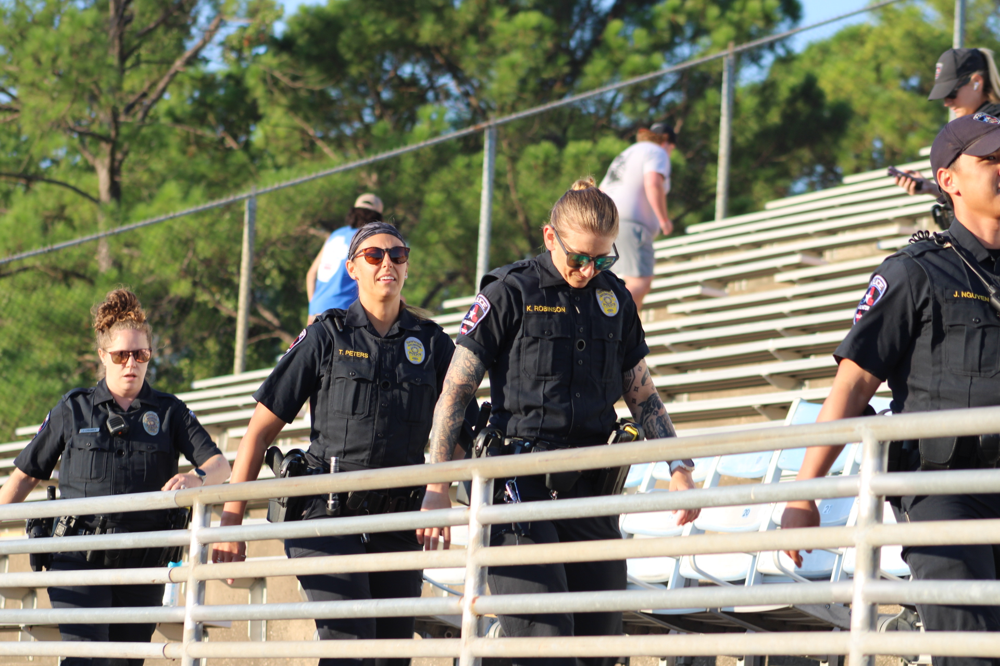
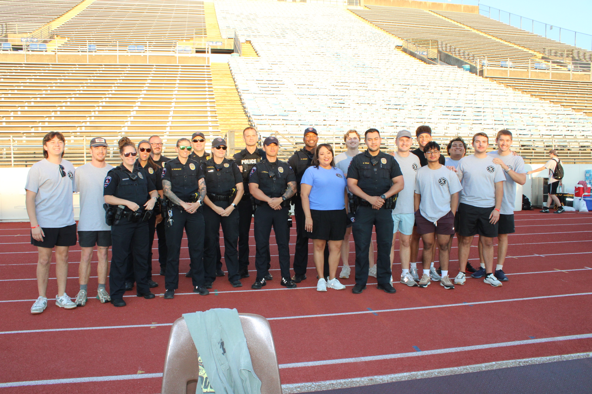

Register
Participant registration will be on the day of the event starting at 6:45 AM.
Registration detailsHonoring those who serve
Steps of Valor is a nonprofit organization built around remembrance, resilience, and community support for first responders and the families who stand beside them.
The stair climb is the current Steps of Valor event, bringing the community together in remembrance and support.
The organization
Steps of Valor exists to support first responders and their families through programs, resources, community initiatives, and remembrance events that strengthen those who dedicate their lives to serving others.
The 9/11 Memorial Stair Climb is the current public event for Steps of Valor.

Ways to stand with us
Give through the official Spotfund page, sponsor the 2026 stair climb, or plan to register on the day of the event.
Participant registration will be on the day of the event starting at 6:45 AM.
Registration detailsSupport the launch and mission through the official Spotfund fundraiser.
Donate on SpotfundSponsorship levels are available from $250 to $5,000 for the 2026 stair climb.
Sponsor the eventRead about the purpose of the climb, confirmed schedule, and event-day updates.
Explore the missionFeatured causes
Steps of Valor highlights service-centered causes connected to remembrance, community support, and care for those who serve.
Supporting veterans, military families, and service-related community outreach through Kappa Sigma's national philanthropic initiative.
Learn about the campaignSupporting Arlington firefighters and their families through charitable assistance and community support.
Visit their page
Featured coverage
The Shorthorn documented community members coming together for the stair climb to honor 9/11 first responders.
View the photo storyFrom the climb
September 11, 2026
Event-day registration opens at 6:45 AM. The climb begins at 8:03 AM at Maverick Stadium, 1307 W Mitchell St, Arlington, TX 76013.